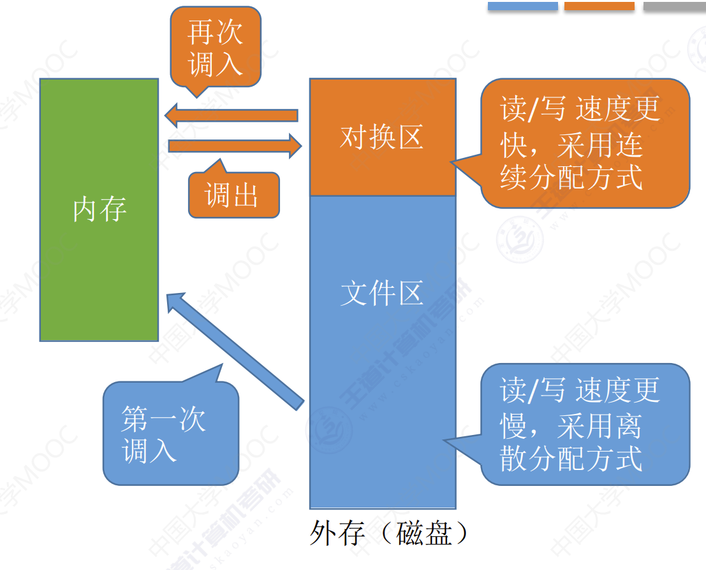

内存空间的拓充
内存空间的拓充
覆盖技术
思想：将程序分为多个段（多个模块）。常用的段常驻内存，不常用的段在需要时调入内存。内存中分为一个固定区和若干个覆盖区。
- 需要常驻内存的段放在固定区中，调入后就不再调出（除非运行结束）。
- 不常用的段放在覆盖区，需要用到时调入内存，用不到时调出内存。

必须由程序员声明覆盖结构，操作系统完成自动覆盖。
缺点：对用户不透明，增加了用户编程负担。覆盖技术只用于早期的操作系统中，现在已成为历史。
交换技术
思想：内存空间紧张时，系统将内存中某些进程暂时换出外存，把外存中某些已具备运行条件的进程换入内存（进程在内存与磁盘间动态调度）
- 暂时换出外存等待的进程状态为挂起状态（阻塞态，suspend）。
- 挂起态又可以进一步分为就绪挂起、阻塞挂起两种状态。
缺点：必须由程序员声明覆盖结构，操作系统完成自动覆盖，对用户不透明，增加了用户编程负担。
应该在外存的什么位置保存被换出的进程？
具有对换功能的操作系统系统中，通常把磁盘空间分为文件区和对换区两部分。因此对文件区的管理采用离散分配方式：对换区空间只占磁盘空间的小部分，被换出的进程数据就存放在对换区。由于对换的速度直接影响带系统的整体速度，因此对换区空间的管理主要追求换入换出速度，因此通常对换区采用连续分配方式。
什么时候交换？
交换通常在许多进程运行且内存吃紧时进行，而系统负荷降低就暂停。
应该换出哪些进程？
可优先换出阻塞进程或者优先级低的进程，为了防止优先级低的进程在被调入内存后会很快被换出，有的系统还会考虑进程在内存的驻留时间。
==注意：PCB会常驻内存，不会被换出外存。==
虚拟内存技术
传统存储管理方式的特征、缺点
一次性：作业必须一次性全部装入内存后才能开始运行。这会造成两个问题：
- 作业很大时，不能全部装入内存，导致大作业无法运行；
- 当大量作业要求运行时，由于内存无法容纳所有作业，因此只有少量作业能运行，导致多道程序并发度下降。
驻留性：一旦作业被装入内存，就会一直驻留在内存中，直至作业运行结束。事实上，在一个时间段内，只需要访问作业的一小部分数据即可正常运行，这就导致了内存中会驻留大量的、暂时用不到的数据，浪费了宝贵的内存资源
虚拟内存的定义和特征
基于局部性原理，在程序装入时，可以将程序中很快用到的部分装入内存，暂时用不到的部分驻留在外存，可以让程序开始执行。在程序执行过程中，当所访问的信息不在内存时，由操作系统负责将所需信息从外存调入内存，然后继续执行程序。若内存空间不够，由操作系统负责将内存中暂时用不到的信息换出到外存。在操作系统的管理下，在用户看来似乎有一个比实际内存大得多的内存，这就是虚拟内存
易混知识点：
虚拟内存的最大容量是由计算机的地址结构（CPU寻址范围）确定的虚拟内存的实际容量 = min（内存和外存容量之和，CPU寻址范围）
如：某计算机地址结构为32位，按字节编址，内存大小为512MB，外存大小为2GB。
- 虚拟内存的最大容量为 $232B = 4GB$
- 虚拟内存的实际容量为 $min(232B, 512MB+2GB) = 2GB+512MB$
虚拟内存有一下三个主要特征：
- 多次性：无需在作业运行时一次性全部装入内存，而是允许被分成多次调入内存。
- 对换性：在作业运行时无需一直常驻内存，而是允许在作业运行过程中，将作业换入、换出。
- 虚拟性：从逻辑上扩充了内存的容量，使用户看到的内存容量，远大于实际的容量。
实现虚拟内存技术
虚拟内存技术，允许一个作业分多次调入内存。如果采用连续分类方式，会不方便实现。因此，虚拟内存的实现需要尽力在一个离散分配的基础上。

请求分页管理方式
主要区别：
- 在程序执行过程中，当所访问的信息不在内存时，由操作系统负责将所需信息从外存调入内存，然后继续执行程序。操作系统要提供请求调页（或请求调段）功能。
- 若内存空间不够，由操作系统负责将内存中暂时用不到的信息换出到外存。操作系统要提供页面置换（或段置换）的功能
页表机制
在请求分页管理中，要实现请求调页：
操作系统需要知道每个页面是否已经调入内存；如果还没调入，那么也需要知道该页面在外存中存放的位置。
当内存空间不够时，要实现页面置换：
操作系统需要通过某些指标来决定到底换出哪个页面；有的页面没有被修改过，就不用再浪费时间写回外存。
有的页面修改过，就需要将外存中的旧数据覆盖，因此，操作系统也需要记录各个页面是否被修改的信息。

缺页中断机构
假设此时要访问的逻辑地址 = （页号，页内偏移量）= (0, 1024)
在请求分页系统中，每当要访问的页面不在内存时，便产生一个缺页中断，然后由操作系统缺页中断服务程序处理中断。此时缺页的进程进入阻塞态，放到阻塞队列中，调页完成后再将其唤醒，放回就绪队列。
- 如果内存有空闲块，则为进程分配一个空闲块，将所缺页面装入该块，并修改页表中相应表项。
- 如果内存中没有空闲块，则由页面置换算法选择一个页面淘汰，若该页面在内存期间被修改过，则要将其写回外存。未修改过的页面不用写回外存。
缺页中断是因为当前执行的指令想要访问的目标页面未调入内存而产生的，因此属于内中断一条指令在执行期间，可能产生多次缺页中断。（如：copy A to B，即将逻辑地址A中的数据复制到逻辑地址B，而A、B属于不同的页面，则有可能产生两次中断）

地址变换机构
和分页存储管理的区别：
- 新增步骤1：请求调页（查到页表项时进行判断）
- 新增步骤2：页面置换（需要调入页面，但没有空闲内存块时进行）
- 新增步骤3：需要修改请求页表中新增的表项

举例：CPU现在要访问一个逻辑地址：
- 根据逻辑地址计算出页号，去快表中寻找对应页号，如果快表中找到了对应页号，那么直接转换为物理地址访存。否则，去内存访问页表。
- 如果在内存页表找到对应页号，那么直接转换为物理地址访存，同时将对应页表项调入快表。如果快表未满，那么直接调入即可。如果快表已满，那么要根据某些置换算法将快表中的页表项换出。如果没找到，说明对应页号不在内存中，触发缺页中断，让操作系统将其他页面调入内存。
- 如果内存已满，根据页面置换算法将页面置换出，否则直接调入新页面。如果被置换的页面已经被修改，那么将改页的内容写回外存。
- 操作系统启动IO将页面从外存调入内存，根据物理地址进行访问，同时将对应页表项调入快表。
页面置换算法
最佳置换算法
最佳置换算法（OPT，Optimal）：每次选择淘汰的页面将是以后永不使用，或者在最长时间内不再被访问的页面，这样可以保证最低的缺页率。
例：假设系统为某进程分配了三个内存块，并考虑到有一下页面号引用串（会依次访问这些页面）：7, 0, 1, 2, 0, 3, 0, 4, 2, 3, 0, 3, 2, 1, 2, 0, 1, 7, 0, 1
| 访问页面 | 7 | 0 | 1 | 2 | 0 | 3 | 0 | 4 | 2 | 3 | 0 | 3 | 2 | 1 | 2 | 0 | 1 | 7 | 0 | 1 |
|---|---|---|---|---|---|---|---|---|---|---|---|---|---|---|---|---|---|---|---|---|
| 内存块1 | 7 | 7 | 7 | 2 | 2 | 2 | 2 | 2 | 7 | |||||||||||
| 内存块2 | 0 | 0 | 0 | 0 | 4 | 0 | 0 | 0 | ||||||||||||
| 内存块3 | 1 | 1 | 3 | 3 | 3 | 1 | 1 | |||||||||||||
| 是否缺页 | √ | √ | √ | √ | √ | √ | √ | √ | √ |
整个过程缺页中断9次，页面置换放生了6次。注意：缺页时未必发生页面置换。若还有可用的空闲内存块，就不用进行页面置换。
缺页率：$\frac{9}{20} = 45%$
最佳置换算法可以保证最低的缺页率，但实际上，只有在进程执行的过程中才能知道接下来会访问到的是哪个页面。操作系统无法提前预判页面访问序列。因此，最佳置换算法是无法实现的。
先进先出置换算法
先进先出置换算法（FIFO）：每次选择淘汰的页面是最早进入内存的页面
实现方法：把调入内存的页面根据调入的先后顺序排成一个队列，需要换出页面时选择队头页面即可。队列的最大长度取决于系统为进程分配了多少个内存块。
例：假设系统为某进程分配了三个内存块，并考虑到有以下页面号引用串：3, 2, 1, 0, 3, 2, 4, 3, 2, 1, 0, 4
| 访问页面 | 3 | 2 | 1 | 0 | 3 | 2 | 4 | 3 | 2 | 1 | 0 | 4 |
|---|---|---|---|---|---|---|---|---|---|---|---|---|
| 内存块1 | 3 | 3 | 3 | 0 | 0 | 0 | 4 | 4 | 4 | |||
| 内存块2 | 2 | 2 | 2 | 3 | 3 | 3 | 1 | 1 | ||||
| 内存块3 | 1 | 1 | 1 | 2 | 2 | 2 | 0 | |||||
| 是否缺页 | √ | √ | √ | √ | √ | √ | √ | √ | √ |
分配三个内存块时，缺页9次。
例：假设系统为某进程分配了四个内存块，并考虑到有以下页面号引用串：3, 2, 1, 0, 3, 2, 4, 3, 2, 1, 0, 4
| 访问页面 | 3 | 2 | 1 | 0 | 3 | 2 | 4 | 3 | 2 | 1 | 0 | 4 |
|---|---|---|---|---|---|---|---|---|---|---|---|---|
| 内存块1 | 3 | 3 | 3 | 3 | 4 | 4 | 4 | 4 | 0 | 0 | ||
| 内存块2 | 2 | 2 | 2 | 2 | 3 | 3 | 3 | 3 | 4 | |||
| 内存块3 | 1 | 1 | 1 | 1 | 2 | 2 | 2 | 2 | ||||
| 内存块4 | 0 | 0 | 0 | 0 | 1 | 1 | 1 | |||||
| 是否缺页 | √ | √ | √ | √ | √ | √ | √ | √ | √ | √ |
分配给4个内存块的时候缺页次数10次。
Belady异常——当为进程分配的物理块数增大时，缺页次数不减反增的异常现象。
只有 FIFO 算法会产生 Belady 异常。另外，FIFO算法虽然实现简单，但是该算法与进程实际运行时的规律不适应，因为先进入的页面也有可能最经常被访问。因此，算法性能差
最近最久未使用置换算法
最近最久未使用置换算法（LRU，least recently used）：每次淘汰的页面是最近最久未使用的页面
实现方法：赋予每个页面对应的页表项中，用访问字段记录该页面自上次被访问以来所经历的时间 t 。当需要淘汰一个页面时，选择现有页面中 t 值最大的，即最近最久未使用的页面。
例：假设系统为某进程分配了四个内存块，并考虑到有以下页面号引用串为1, 8, 1, 7, 8, 2, 7, 2, 1, 8, 3, 8, 2, 1, 3, 1, 7, 1, 3, 7。
| 访问页面 | 1 | 8 | 1 | 7 | 8 | 2 | 7 | 2 | 1 | 8 | 3 | 8 | 2 | 1 | 3 | 1 | 7 | 1 | 3 | 7 |
|---|---|---|---|---|---|---|---|---|---|---|---|---|---|---|---|---|---|---|---|---|
| 内存块1 | 1 | 1 | 1 | 1 | 1 | 1 | ||||||||||||||
| 内存块2 | 8 | 8 | 8 | 8 | 7 | |||||||||||||||
| 内存块3 | 7 | 7 | 3 | 3 | ||||||||||||||||
| 内存块4 | 2 | 2 | 2 | |||||||||||||||||
| 是否缺页 | √ | √ | √ | √ | √ | √ | √ |
缺点：该算法的实现需要专门的硬件支持，虽然算法性能好，但是实现困难，开销大。
在手动做题时，若需要淘汰页面，可以逆向检查此时在内存中的几个页面号。在逆向扫描过程中最后一个出现的页号就是要淘汰的页面。
时钟置换算法
最佳置换算法性能最好，但无法实现；先进先出置换算法实现简单，但算法性能差；最近最久未使用置换算法性能好，是最接近OPT算法性能的，但是实现起来需要专门的硬件支持，算法开销大。时钟置换算法是一种性能和开销较均衡的算法，又称CLOCK算法，或最近未用算法NRU
简单的CLOCK算法实现方法：为每个页面设置一个访问位，再将内存中的页面都通过链接指针链接成一个循环队列。
- 当某页被访问时，其访问位置为1。当需要淘汰一个页面时，只需检查页的访问位。
- 如果是0，就选择该页换出；如果是1，则将它置为0，暂不换出，继续检查下一个页面，
- 若第一轮扫描中所有页面都是1，则将这些页面的访问位依次置为0后，再进行第二轮扫描（第二轮扫描中一定会有访问位为0的页面，因此简单的CLOCK算法选择一个淘汰页面最多会经过两轮扫描）

例：假设系统为某进程分配了五个内存块，并考虑到有以下页面号引用串：1, 3, 4, 2, 5, 6, 3, 4, 7
开始时循环队列为空：
- 访问1号页，扫描循环队列，发现没有1号页面，调入1号页面，将其访问为置为1。循环队列：1号页（1）
- 访问3号页，扫描循环队列，发现没有3号页面，调入3号页面，将其访问为置为1。循环队列：1号页（1）-> 3号页（1）
- 访问4号页，扫描循环队列，发现没有4号页面，调入4号页面，将其访问为置为1。循环队列：1号页（1）-> 3号页（1）-> 4号页（1）
- 访问2号页，扫描循环队列，发现没有2号页面，调入2号页面，将其访问为置为1。循环队列：1号页（1）-> 3号页（1）-> 4号页（1）-> 2号页（1）
- 访问5号页，扫描循环队列，发现没有5号页面，调入5号页面，将其访问为置为1。循环队列：1号页（1）-> 3号页（1）-> 4号页（1）-> 2号页（1）-> **5号页（1）**此时循环队列已满。
- 访问6号页，循环队列已满，使用CLOCK算法淘汰页面，第一次扫描循环队列，寻找访问位为0的页面换出，将访问位为1的页全部置为0。第二次扫描，发现1号页访问位为0，将1号页换出。将6号页面调入。循环队列：6号页（1）-> 3号页（0）-> 4号页（0）-> 2号页（0）-> 5号页（0）。
- 访问3号页，发现有3号页面，将3号页面访问位置为1。循环队列：6号页（1）-> 3号页（1）-> 4号页（0）-> 2号页（0）-> 5号页（0）。
- 访问4号页，发现有4号页面，将4号页面访问位置为1。循环队列：6号页（1）-> 3号页（1）-> 4号页（1）-> 2号页（0）-> 5号页（0）。
- 访问7号页，循环队列已满，使用CLOCK算法淘汰页面。第一次扫描循环队列，寻找访问位为0的页面换出，将访问位为1的页全部置为0。将2号页换出，调入7号页面。循环队列：6号页（1）-> 3号页（1）-> 4号页（1）-> 7号页（1）-> 5号页（0）。
改进型的时钟置换算法
简单的时钟置换算法仅考虑到一个页面最近是否被访问过。事实上，如果被淘汰的页面没有被修改过，就不需要执行I/O操作写回外存。只有被淘汰的页面被修改过时，才需要写回外存。
因此，除了考虑一个页面最近有没有被访问过之外，操作系统还应考虑页面有没有被修改过。在其他条件都相同时，应优先淘汰没有修改过的页面，避免I/O操作。这就是改进型的时钟置换算法的思想。修改位=0，表示页面没有被修改过；修改位=1，表示页面被修改过。
为方便讨论，用（访问位，修改位）的形式表示各页面状态。如(1, 1)表示一个页面近期被访问过，且被修改过。
算法规则：将所有可能被置换的页面排成一个循环队列
- 第一轮：从当前位置开始扫描到第一个
(0, 0)的帧用于替换。本轮扫描不修改任何标志位。（第一优先级：最近没访问，且没修改的页面） - 第二轮：若第一轮扫描失败，则重新扫描，查找第一个
(0, 1)的帧用于替换。本轮将所有扫描过的帧访问位设为0。（第一优先级：最近没访问，但修改过的页面） - 第三轮：若第二轮扫描失败，则重新扫描，查找第一个
(0, 0)的帧用于替换。本轮扫描不修改任何标志位。（第一优先级：最近访问过，且没修改的页面） - 第四轮：若第三轮扫描失败，则重新扫描，查找第一个
(0, 1)的帧用于替换。（第一优先级：最近访问过，且修改过的页面）
由于第二轮已将所有帧的访问位设为0，因此经过第三轮、第四轮扫描一定会有一个帧被选中，因此改进型CLOCK置换算法选择一个淘汰页面最多会进行四轮扫描。
总结

页面分配策略
驻留集：指请求分页存储管理中分配给进程的物理块集合。在采用了虚拟存储技术的系统中，驻留集大小一般小于进程的总大小。
- 若驻留集太小，会导致缺页频繁，系统要花大量的时间来处理缺页，实际用于进程推进的时间很少；
- 若驻留集太大，又会导致多道程序并发度下降，资源利用率降低。
所以应该选择一个合适的驻留集大小。
固定分配：操作系统为每个进程分配一组固定数目的物理块，在进程运行期间不再改变。即，驻留集大小不变。
可变分配：先为每个进程分配一定数目的物理块，在进程运行期间，可根据情况做适当的增加或减少。即，驻留集大小可变。
局部置换：发生缺页时只能选进程自己的物理块进行置换。
全局置换：可以将操作系统保留的空闲物理块分配给缺页进程，也可以将别的进程持有的物理块置换到外存，再分配给缺页进程
页面分配置换策略
固定分配局部置换：系统为每个进程分配一定数量的物理块，在整个运行期间都不改变。若进程在运行中发生缺页，则只能从该进程在内存中的页面中选出一页换出，然后再调入需要的页面。
这种策略的缺点是：很难在刚开始就确定应为每个进程分配多少个物理块才算合理。（采用这种策略的系统可以根据进程大小、优先级、或是根据程序员给出的参数来确定为一个进程分配的内存块数）
可变分配全局置换：刚开始会为每个进程分配一定数量的物理块。操作系统会保持一个空闲物理块队列。当某进程发生缺页时，从空闲物理块中取出一块分配给该进程；若已无空闲物理块，则可选择一个未锁定（重要的内核数据可能会被锁定）的页面换出外存，再将该物理块分配给缺页的进程。
采用这种策略时，只要某进程发生缺页，都将获得新的物理块，仅当空闲物理块用完时，系统才选择一个未锁定的页面调出。被选择调出的页可能是系统中任何一个进程中的页，因此这个被选中的进程拥有的物理块会减少，缺页率会增加。
可变分配局部置换：刚开始会为每个进程分配一定数量的物理块。当某进程发生缺页时，只允许从该进程自己的物理块中选出一个进行换出外存。如果进程在运行中频繁地缺页，系统会为该进程多分配几个物理块，直至该进程缺页率趋势适当程度；反之，如果进程在运行中缺页率特别低，则可适当减少分配给该进程的物理块。
可变分配全局置换：全局置换意味着一个进程拥有的物理块数量必然会改变，因此不可能是固定分配。此方法不存在。
可变分配全局置换：只要缺页就给分配新物理块
可变分配局部置换：要根据发生缺页的频率来动态地增加或减少进程的物理块
何时调入页面
预调页策略：根据局部性原理，一次调入若干个相邻的页面可能比一次调入一个页面更高效。但如果提前调入的页面中大多数都没被访问过，则又是低效的。因此可以预测不久之后可能访问到的页面，将它们预先调入内存，但目前预测成功率只有50%左右。故这种策略主要用于进程的首次调入，由程序员指出应该先调入哪些部分。
请求调页策略：进程在运行期间发现缺页时才将所缺页面调入内存。由这种策略调入的页面一定会被访问到，但由于每次只能调入一页，而每次调页都要磁盘I/O操作，因此I/O开销较大。
- 系统拥有足够的对换区空间：页面的调入、调出都是在内存与对换区之间进行，这样可以保证页面的调入、调出速度很快。在进程运行前，需将进程相关的数据从文件区复制到对换区。
- 系统缺少足够的对换区空间：凡是不会被修改的数据都直接从文件区调入，由于这些页面不会被修改，因此换出时不必写回磁盘，下次需要时再从文件区调入即可。对于可能被修改的部分，换出时需写回磁盘对换区，下次需要时再从对换区调入。
- UNIX 方式：运行之前进程有关的数据全部放在文件区，故未使用过的页面，都可从文件区调入。若被使用过的页面需要换出，则写回对换区，下次需要时从对换区调入。
抖动颠簸现象
刚刚换出的页面马上又要换入内存，刚刚换入的页面马上又要换出外存，这种频繁的页面调度行为称为抖动，或颠簸。产生抖动的主要原因是进程频繁访问的页面数目高于可用的物理块数（分配给进程的物理块不够）
为进程分配的物理块太少，会使进程发生抖动现象。为进程分配的物
理块太多，又会降低系统整体的并发度，降低某些资源的利用率。
工作集，驻留集
驻留集：指请求分页存储管理中给进程分配的内存块的集合。
工作集：指在某段时间间隔里，进程实际访问页面的集合。
例：某进程的页面访问序列如下，窗口尺寸为4，各时刻的工作集为？
24，15，18，23，24，17，18，24，18，17，17，15。
工作集：24，15，18，23或者24，18，17。
工作集大小可能小于窗口尺寸，实际应用中，操作系统可以统计进程的工作集大小，根据工作集大小给进程分配若干内存块。
如：窗口尺寸为5，经过一段时间的监测发现某进程的工作集最大为3，那么说明该进程有很好的局部性，可以给这个进程分配3个以上的内存块即可满足进程的运行需要。
一般来说，驻留集大小不能小于工作集大小，否则进程运行过程中将频繁缺页。
拓展：基于局部性原理可知，进程在一段时间内访问的页面与不久之后会访问的页面是有相关性的。因此，可以根据进程近期访问的页面集合（工作集）来设计一种页面置换算法——选择一个不在工作集中的页面进行淘汰。操作系统会根据窗口尺寸来算出工作集。
内存映射文件
内存映射文件——操作系统向上层程序员提供的功能（系统调用）
- 方便程序员访问文件数据
- 方便多个进程共享同一个文件
传统文件访问方式
- open 系统调用——打开文件
- seek 系统调用——将读写指针移到某个位置
- read 系统调用——从读写指针所指位置读入若干数据（从磁盘
读入内存） - write 系统调用——将内存中的指定数据，写回磁盘（根据读写
指针确定要写回什么位置）
内存映射文件访问方式
open 系统调用——打开文件
mmap 系统调用——将文件映射到进程的虚拟地址空间
以访问内存的方式访问文件数据
文件数据的读入、写出由操作系统自动完成
进程关闭文件时，操作系统自动将文件被修改的数据写回磁盘